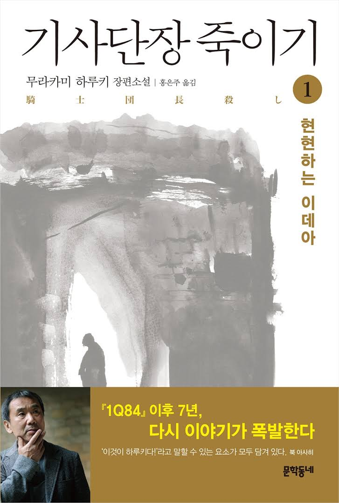
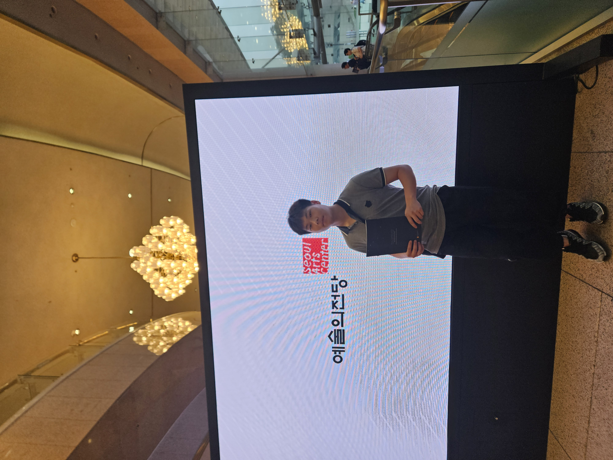
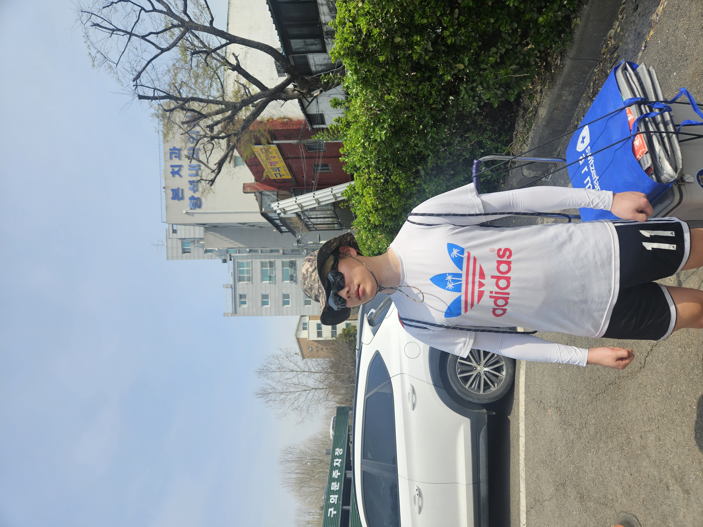

기사단장 죽이기 - 무라카미 하루키
아직도 이 책을 읽었을 때의 충격을 잊지 못하겠습니다. 군대에서 읽었습니다. 작품 장르는 미스터리 소설 입니다. 왜 이 작가가 노벨문학상 후보에 계속 이름이 오르락내리락 하는지 알 것 같습니다. 보통 소설과는 다르게 생각을 굉장히 많이 하게 되고, 약간의 찝찝함이 남아 있습니다.
현재에 최선을
| 이름 | 피노(문해찬) |
|---|---|
| MBTI | ISTP |
| 취미 | 축구, 피아노 |
| 좋아하는 음식 | 숯불 돼지갈비 + 약간 매운 고추 + 소주 |
갤러리 부제를 작성해주세요. (예: 기억에 남는 여행지)





아직도 이 책을 읽었을 때의 충격을 잊지 못하겠습니다. 군대에서 읽었습니다. 작품 장르는 미스터리 소설 입니다. 왜 이 작가가 노벨문학상 후보에 계속 이름이 오르락내리락 하는지 알 것 같습니다. 보통 소설과는 다르게 생각을 굉장히 많이 하게 되고, 약간의 찝찝함이 남아 있습니다.
"사람은 언제 죽는다고 생각하나?"
"심장이 총알에 뚫렸을 때? 아니."
"불치의 병에 걸렸을 때? 아니."
"맹독 버섯 스프를 마셨을 때? 아니! ...사람들에게 잊혀질 때다."
불과 한달 전. 집에서 우동먹으면서 보는데 눈물을 펑펑 흘렸습니다.
의사라는 책임감에 자신이 죽어감에도 적을 살리러 갑니다. 매우 감동적인 스토리 입니다.
오늘 새롭게 배운 것들을 기록합니다.
인터넷과 웹에 대해서 배웠다. 읽기만 하면서 다 아는거라고 생각했는데 실시간 질문을 받아보니 그게 아니라는 것을 알게 되었다. 아직 많이 부족하다.